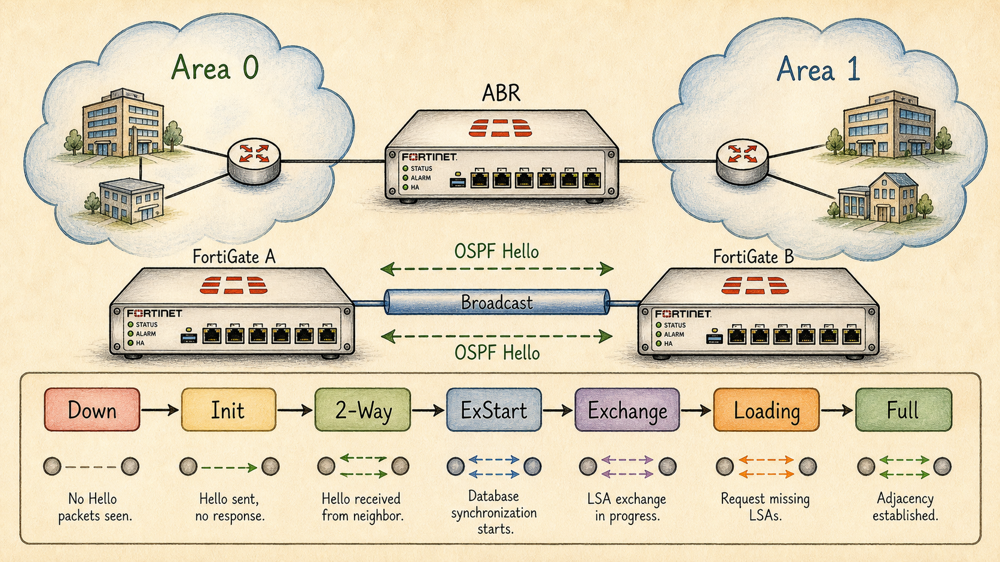

Ready to Begin the Session
| Official NSE7 EF Blueprint Objectives |
|
| Prerequisites | Session 20: Why Dynamic Routing on a Firewall |
| Estimated Duration | 30 minutes |
| Phase | Phase 5 — Dynamic Routing: OSPF & BGP |
Session 21 — OSPF — Areas, LSAs & Neighbor States Where we are in the NSE7 journey: OSPF is link-state: every router builds the same map and computes the shortest path itself. The FortiGate joins this map by becoming a neighbor and exchanging LSAs. The problem we're solving today: The exam tests not the SPF algorithm but the *operational* OSPF: hello/dead intervals, area types, LSA flooding scope, and the neighbor state machine. Session goal: Bring up an OSPF adjacency on a FortiGate, verify state transitions, and explain why a single mismatched timer keeps neighbors stuck at 2-Way. Key concepts: • Hello / dead intervals and the timer-mismatch trap • Neighbor states: Down → Init → 2-Way → ExStart → Exchange → Loading → Full • Area 0 backbone rule and ABRs • LSA Types 1-5 in two sentences each • OSPF cost calculation on FortiGate interfaces
Where We Are in the NSE7 Journey

Two FortiGates exchanging OSPF Hellos across a 'broadcast' link.
OSPF is link-state: every router builds the same map and computes the shortest path itself. The FortiGate joins this map by becoming a neighbor and exchanging LSAs.
The Problem We're Solving Today
The exam tests not the SPF algorithm but the *operational* OSPF: hello/dead intervals, area types, LSA flooding scope, and the neighbor state machine.
Key Concepts
- Hello / dead intervals and the timer-mismatch trap
- Neighbor states: Down → Init → 2-Way → ExStart → Exchange → Loading → Full
- Area 0 backbone rule and ABRs
- LSA Types 1-5 in two sentences each
- OSPF cost calculation on FortiGate interfaces
What We Discovered Together
Parsed from the persistent session summary produced at the end of the Socratic investigation. Use it to rebuild context before a review or a lab.
Session Information
- Session Number21
- TopicOSPF — Areas, LSAs & Neighbor States
- DateJuly 2026
- CertificationFortinet NSE7 Enterprise Firewall 7.6 (Domain 4 — Routing)
Story Progress
Setting: Vaultline Financial, Monday morning, one week after the Session 20 outage post-mortem. Priya's design meeting settled on OSPF for the interior; nothing ships without lab proof.
Events: A lab bench (FGT-HQ-CORE + FGT-LAB-BR, port5↔port5, 10.10.12.0/24, area 0) produced the session's central mystery: neighbors parked at 2-Way/DROTHER for 10+ minutes. Root cause: BOTH interfaces carried priority 0 — the other engineer had copied the production spoke-template draft (where priority 0 is intentional) onto both lab boxes. "A perfectly executed election with no candidates" became the incident log line. Fix: set priority 1 on one box; state sprinted to Full/DR.
Priya's whiteboard question — "DR site: area 0 or its own area?" — was answered with a verdict: DR site gets its own area (0.0.0.3), because the S20 flappy WAN circuit must not be part of area 0's Type 1/2 topology; each flap demotes from a backbone-wide full-SPF storm to a partial recalculation at HQ. A hypothetical Harbourview branch (area 0.0.0.2) was added to the design canvas to force scaling questions; the proposed direct Meridian↔Harbourview link was ruled illegal/useless (backbone rule). Marcus (NOC, from S40) reappeared with "how does Meridian get to the internet?" — introducing redistribution, ASBR, and Types 4/5. FG-EDGE-P identified as the future two-hat router: ABR + ASBR simultaneously.
Outstanding / cliffhangers- S22: eBGP from FG-EDGE-P→ISP-A and FG-EDGE-DR→ISP-B; then redistribution done properly (AD ladder becomes live).
- WAN link area assignments parked ("each link belongs to exactly one area — that choice decides who the ABR is") — config-session material.
- Daniel's OSPF authentication question still pending (flagged since S20 notes).
- Stub/NSSA + Type 7 were HANDED (reference nibble), not derived — candidate for a short discovery treatment ("why would an area ban Type 5s?").
- Still open: split-policy architecture (S39/40), VDOM partitioning thread (S16/18).
Concepts Learned
2. DR election: priority 0 = INELIGIBLE (not "unlikely"); wait timer = dead interval; production use = deterministic DR placement. DR changes the FLOODING PATTERN (hub-and-spoke), it does not originate others' LSAs. Full adjacencies on a segment = 2n−3 (constructed: DR 5 + BDR 4 + DROTHER pairs 0 = 9 for n=6); the 6 deleted adjacencies are the DROTHER pairs, healthy at 2-Way forever.
3. Areas: link-state INSIDE, distance-vector BETWEEN. Type 3 = a claim ("prefix, through me, cost"), unverifiable by the receiving area. Loop prevention is a topology law: backbone rule (all areas attach to area 0, never each other; ABRs ignore Type 3s from non-zero areas) — a star has no cycles. Backstop: intra-area always beats inter-area. Cost asymmetry: intra-area change = full SPF area-wide; inter-area/external change = partial SPF. Virtual links extend the backbone, never bypass it (exam distractor).
4. LSAs derived in problem order: 1 = router's own links, per-area; 2 = the SEGMENT (pseudonode), DR-only author, per-area; 3 = ABR claim, re-originated border to border; 4 = directions to the ASBR, ORIGINATED BY THE ABR (exists for the gap between border and smuggler); 5 = external prefix, ASBR-originated, DOMAIN-WIDE unchanged. E1 vs E2 metrics; E-bit in Type 1 triggers Type 4 generation. Type 7/NSSA given as reference only.
5. Cost = reference bandwidth ÷ interface bandwidth ("big pipe, small cost"); FortiGate default reference 1 Gbps → blind above 1G (10G clamps to 1). Fix: auto-cost-ref-bandwidth (Mbps) on EVERY router — mixed rulers = identical LSDBs, unanimous, confidently wrong.
6. Command kit (study-guide aligned): get router info ospf neighbor / interface / status / database brief / database router lsa; routing-table ospf vs all (LSDB ≠ RIB; AD arbitrates); sniffer 'proto 89' (224.0.0.5 / 224.0.0.6); OSPF debug + mandatory diagnose debug disable; execute router clear ospf process.
My Understanding
Strong moments- Named Type 3 unprompted before LSAs were taught; invented Type 5's domain-wide need and Type 4's reason-to-exist from pure problem pressure.
- Constructed 2n−3 (5+4+0=9) instead of memorizing; identified the deleted mesh adjacencies as DROTHER pairs.
- "EIGRP/RIP" answer → owned the heresy: OSPF is distance-vector between areas.
- Independently discovered the intra-area-beats-inter-area preference backstop while hunting the loop rule.
- DR-site verdict rendered with correct flap-cost defense (full vs partial SPF).
Struggles / corrections (register candidates):
- TYPE 4 ORIGINATOR: answered "ASBR" even AFTER the correction was given — retrieval slip under quiz pressure. RE-DRILL: "Type 4 — originated by the ABR, about the ASBR."
- COST FORMULA INVERTED cold (gave 100M=1, 1G=10). Anchor: "big pipe, small cost."
- Type 5 scope answered "areas it's connected to" — must say "domain-wide, all standard areas, unchanged."
- Initial 2-Way theory = "waiting for DR election" — corrected via wait-timer arithmetic (40s vs 10 min) and the DROTHER suffix reading.
- Conflated the DC/backbone with the DR-site question on first verdict attempt ("area 0 since it is the DC").
- "Which box becomes the ASBR" needed four passes before naming FG-EDGE-P (kept answering the role, not the box).
- Wording drift: "DR Routers" (plural) for Type 2 author; Type 3 loop question first answered with path selection (nearest ABR) instead of loop prevention.
Troubleshooting Experience
- Fault injected by scenariodual priority-0 stuck 2-Way, diagnosed via get router info ospf interface (Priority line + "No designated router"). Methodology built: the neighbor command splits the fault tree (no entry vs parked vs Full); the parked state names the suspect layer; visible neighbor exonerates timers instantly; the scariest failure has NO stuck state (reference-bandwidth mismatch — Full everywhere, wrong paths). Lesson: config copied from the right template into the wrong context is a first-class production failure mode.
Connections
- BackwardS20's "facts vs claims" anchor did the heavy lifting at the area border; reliable flooding explained why only changed LSAs flood; AD ladder resurfaced in LSDB≠RIB. S19's Meridian/VRRP site is area 1; S20's dead circuit is Exhibit A in the DR-site verdict.
- ForwardS22 BGP (peering, loopback+multihop, ebgp-multipath, RIB filtering) → then redistribution makes FG-EDGE-P's ASBR badge real → all of it feeds ADVPN (Domain 5). Marcus's NOC wants alerting hooks; Daniel's OSPF-auth question is queued.
Important Takeaways
- Hellos get you to 2-Way; databases get you to Full; the DR election decides whether you ever leave 2-Way.
- Priority 0 = ineligible. A flawless election can elect nobody.
- Timer mismatch = no neighbor at all; MTU = ExStart; priority = 2-Way. The visible state names the suspect.
- OSPF: link-state inside an area, distance-vector between. The backbone rule IS the loop prevention (a star has no cycles).
- Intra-area change = full SPF; inter-area/external = partial SPF. Put fragile links in their own area.
- Type 2: the DR only. Type 4: the ABR, about the ASBR. Type 5: domain-wide, unchanged.
- Big pipe, small cost. Default reference is blind above 1 Gbps; one ruler for the whole domain.
Future Session Notes
- Reinforcement(a) cold re-drill Type 4 originator + Type 5 scope next session (missed post-correction — highest priority); (b) cold-quiz the cost formula and reference-bandwidth fix within 1–2 sessions; (c) quick retrieval: 2n−3 construction and "why DROTHER pairs stop at 2-Way"; (d) S20 carryover still due: AD ladder + "why eBGP beats OSPF" rationale, route flapping terminology, 10/40 vs 60/180 + TCP 179.
- Storyopen S22 with Marcus's internet question becoming real — eBGP to ISP-A/ISP-B; Priya wants the S20 55-minute outage impossible to repeat. Natural moment for Daniel's OSPF-auth question when OSPF config lands on production. Consider a mini discovery bite for stub/NSSA/Type 7 ("why ban Type 5s?").
- Spaced repetition dueFGCP internals cold quiz remains the top weakness-register candidate (unchanged since S18/S20).
Audio Podcast Prompt (For "The Packet Path")
Write a two-host podcast script for "The Packet Path," a storytelling podcast for network engineers. Host: Alex, an experienced network security consultant. Co-host: Sam, smart and curious, asks clarifying questions. Tone: intelligent, conversational, true-crime documentary style for network engineers. Episode title: "The Election That Chose Nobody." Length: 12–15 minutes of dialogue.
The case: a financial company lab-tests OSPF before a production rollout. Two FortiGates on one cable sit at 2-Way/DROTHER for ten minutes. Not broken enough to error, not healthy enough to work. The twist: the config was copied from a production spoke template where "priority 0" is intentional — a flawless DR election with zero eligible candidates.
Beats, in order: (1) The bench scene — what 2-Way actually proves (your own Router ID inside their hello) and the elimination trick: a visible neighbor exonerates timers/area/subnet/auth instantly. (2) Sam asks "so who leads?" — the DR election, wait timer = dead interval, priority 0 = ineligible not unlikely; "no designated router on this network" read as a verdict, not an error. (3) The arithmetic: six routers, 15 mesh conversations collapsed to 2n−3 = 9; the six deleted pairs are DROTHERs healthy at 2-Way forever — the exam's favorite non-fault. (4) The whiteboard: areas. Alex's reveal — a Type 3 is a claim, not a map; OSPF is link-state inside, distance-vector between; the backbone rule (all areas attach to area 0, never each other) is loop prevention by geometry: a star has no cycles. (5) The verdict: put the flappy DR-site circuit in its own area — full SPF storms become partial recalculations. (6) Marcus's question: "how does Meridian reach the internet?" — ASBR, Type 5 flying domain-wide, and Type 4 as directions to a smuggler the area can't see, written by the ABR because an invisible router can't advertise directions to itself. (7) The silent killer: cost = reference ÷ bandwidth, default blind above 1 Gbps; mixed rulers = identical databases, unanimous, confidently wrong. Close with Alex: "The election didn't fail. It ran perfectly — and elected no one. In OSPF, the scariest outputs are the ones that aren't errors."
Sam should ask: "Ten minutes at 2-Way — why doesn't it just time out?", "If both routers agreed on everything, how is nothing happening?", "Wait — 2-Way can be *healthy*?", "Why can't two branches just talk directly?", and "How can the whole network agree and still be wrong?"
Guides, Bites & Nibbles
Additional resources sorted to this session — deeper guides, focused explainers, and quick-reference cards.